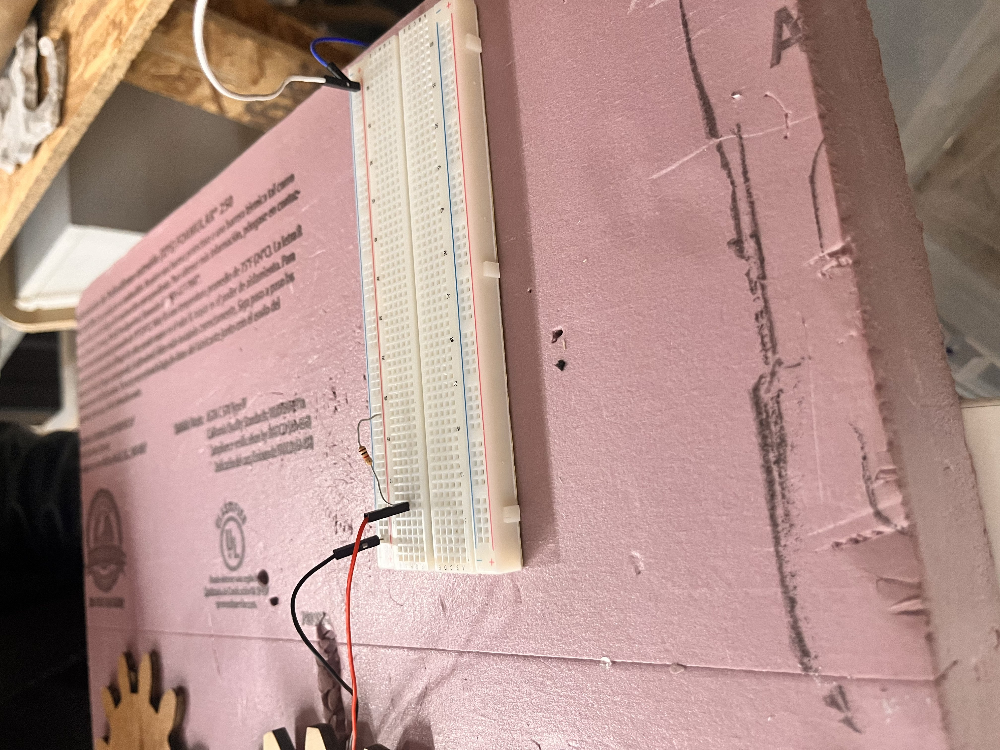
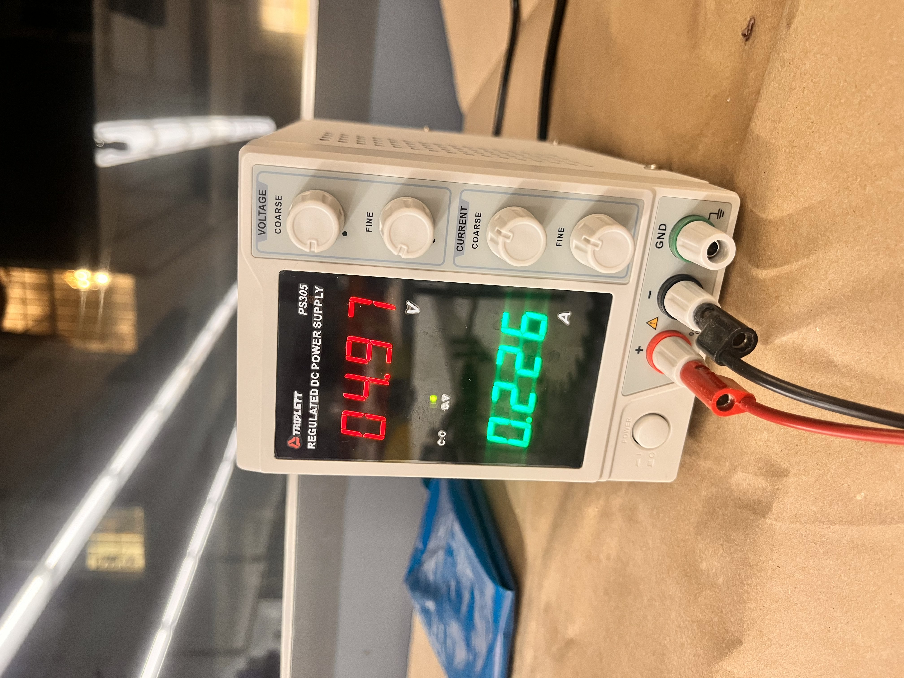

This week, I was tasked with using my knowledge of digital fabrication and hand tools to create a kinetic sculpture. I wasn’t entirely sure what I wanted to create, so I took inspiration from Kassia’s dancers and started thinking about what spins. After some brainstorming, I thought that a carousel would be a good representation of a kinetic sculpture.
The original idea for the carousel was to have a motor connected to a gear and have the gear move another, much larger gear, with the carousel on top. Bobby advised against this idea and suggested instead that I should just attach the motor to the carousel gear to prevent the small gear from not being able to turn the much larger carousel gear.
So, the idea was born! I would have a large central carousel and have it connect to smaller gears with other things going on top of them.
I used cardboard and wooden sticks, along with a little help from my friend hot glue, to assemble the first iteration of the carousel.
This was a success! Almost. The problem with my cardboard prototype was that the gears would not stay flat on the surface, and they would get offset from each other (like when a train derails). Also, the motor would go way too fast, and the teeth would often catch the other teeth and not rotate the other gears. Here is kind of what I mean:
So I was happy, but not yet content. I decided to revisit this in the next week, so keep posted for that! I was also tasked with figuring out the current that ran through my circuit. Here is a diagram that explains the flow of electricity through the circuit.
I also had to figure out the current running through my circuit after I set it up on a breadboard with a resistor. The resistor is 100 Ohms, and I set the current to 5 volts. Ohm's law says that with a resistance of 18 Ohms and 5 volts, the current should be .27 amperes. I plugged the circuit into a regulated power supply to find that the actual current was .227 amps. This is not terribly far from what Ohm's law states.
 